Principe
Watchdoc Mobile Client est une application professionnelle mise à disposition par votre organisation sur son portail EMM La gestion de la mobilité d'entreprise (EMM) est un ensemble de services et de technologies conçus pour sécuriser les données de l'entreprise sur les appareils mobiles des employés. Bien qu'elle puisse se manifester de différentes manières, elle consiste généralement en une suite de systèmes et de services de gestion mobile qui protègent la propriété intellectuelle, en des processus spécifiques qui garantissent la sécurité des données et en des systèmes qui doivent s'intégrer à un large éventail de systèmes informatiques d'entreprise afin de répondre à toute une série de préoccupations de l'entreprise.
(Source : https://www.computerworld.com/) (Intune® ou Google Workspace®, par exemple).
La gestion de la mobilité d'entreprise (EMM) est un ensemble de services et de technologies conçus pour sécuriser les données de l'entreprise sur les appareils mobiles des employés. Bien qu'elle puisse se manifester de différentes manières, elle consiste généralement en une suite de systèmes et de services de gestion mobile qui protègent la propriété intellectuelle, en des processus spécifiques qui garantissent la sécurité des données et en des systèmes qui doivent s'intégrer à un large éventail de systèmes informatiques d'entreprise afin de répondre à toute une série de préoccupations de l'entreprise.
(Source : https://www.computerworld.com/) (Intune® ou Google Workspace®, par exemple).
Elle vous permet d'imprimer des documents PDF à partir de votre mobile Android.
Une fois le travail d'impression envoyé, vous vous rendez sur le périphérique d'impression (imprimante ou MFP) de votre choix pour débloquer (valider) vos impressions.
Accéder à l'application
Pour accéder à Watchdoc Mobile Client, cliquez sur l'icone
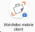
installée sur votre mobile d'entreprise.S'il s'agit d'un mobile personnel utilisé dans un cadre professionnel, l'icone figure dans l'espace professionnel de votre mobile :
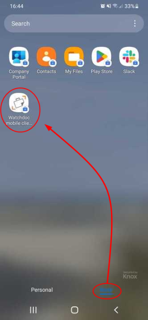
N.B. : si l'icone n'y figure pas, contactez la personne en charge des applications mobiles de votre organisation pour savoir comment activer Watchdoc Mobile Client sur votre mobile.
S'authentifier
-
Pour utiliser l'application, vous devez vous identifier à l'aide de votre compte.
Il s'agit du compte enregistré dans l'annuaire paramétré par défaut dans Watchdoc (annuaire Microsoft Windows®, par exemple) ou un compte invité créé dans la base Invités de WSC.
Si votre compte est enregistré dans un annuaire MS Azure et que le SSO est activé, vous pouvez aussi cliquer sur Me connecter avec Azure :
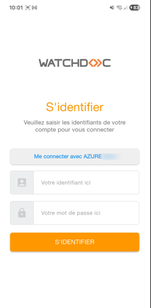
è En cas d'identifiant erroné, un message vous en informe.
-
Un message de bienvenue confirme votre authentification et vous informe de la nécessité de sélectionner un emplacement. Cet emplacement permet à l'application de trouver les périphériques (imprimantes ou MFP) sur lesquels vous pouvez physiquement récupérer vos impressions.
-
cliquez sur J'ai compris pour accéder à l'outil :
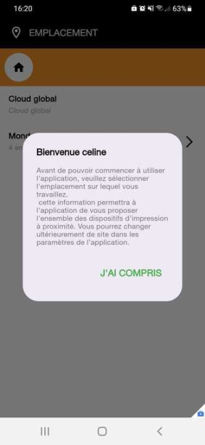
Sélectionner l'emplacement
Par défaut, Watchdoc Mobile Client propose un emplacement correspondant à l'adresse IP à partir de laquelle votre mobile se connecte au réseau.
Dans la liste Emplacement s'affichent les lieux dotés d'imprimantes réseau sur lesquelles vous êtes susceptibles de récupérer vos impressions.
-
Vérifiez l'emplacement affiché dans la liste et conservez-le s'il correspond au lieu depuis lequel vous souhaitez imprimer ;
-
si vous souhaitez en changer, utilisez le moteur de recherche pour retrouver l'emplacement à l'aide de son nom ;
-
ou parcourez la liste pour y sélectionner l'emplacement, puis confirmez votre sélection ;
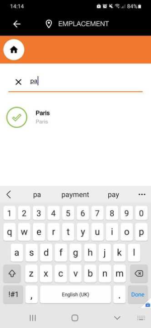
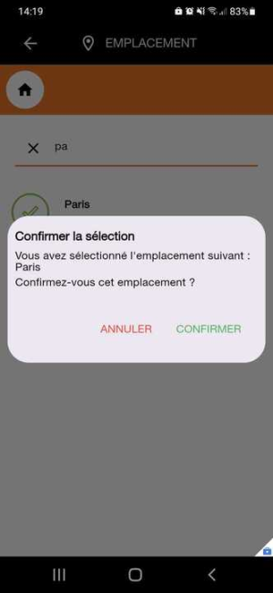
N.B. : si un emplacement est grisé, c'est qu'il ne dispose pas d'imprimante ou de serveur d'impression opérationnel et qu'il ne peut donc pas être utilisé temporairement.
-
Lors de la première utilisation, une fois l'emplacement sélectionné, vous êtes invité à autoriser l'accès aux fichiers de votre mobile Android :
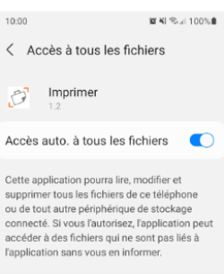
Lancer l'impression depuis Watchdoc Mobile Client
Après avoir autorisé l'accès aux fichiers, vous accédez à l'interface d'impression :
-
cliquez sur le bouton Sélectionner un document ;
-
parcourez les fichiers PDF enregistrés dans votre mobile et sélectionnez le document .pdf que vous souhaitez imprimer ;
è le nom du document s'affiche dans le bouton de sélection ;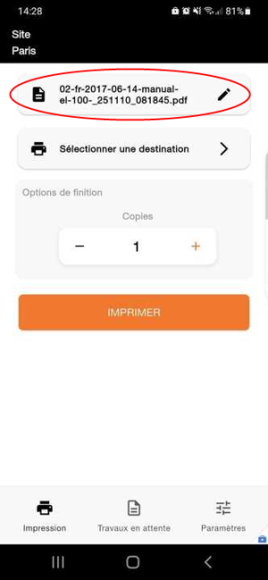
-
cliquez ensuite sur le bouton Sélectionnez une destination
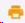
; -
dans la liste Destinations, cherchez et sélectionnez le périphérique vers lequel vous souhaitez envoyer votre travail d'impression :
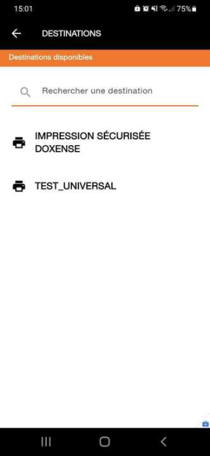
è le nom du périphérique d'impression choisi s'affiche dans le bouton de sélection :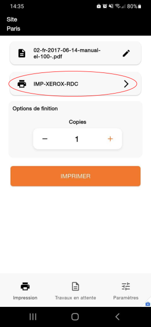
-
si nécessaire (et si le périphérique d'impression le permet), modifiez les Options de finition :
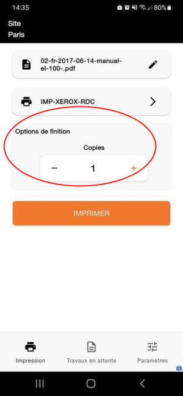
-
cliquez sur le bouton Imprimer :
(N.B. : si vous ne souhaitez finalement pas imprimer le document sélectionné, vous pouvez quitter l'application ou sélectionner un autre document à imprimer).è Un message vous informe que le travail d'impression a bien été envoyé au périphérique d'impression sélectionné :
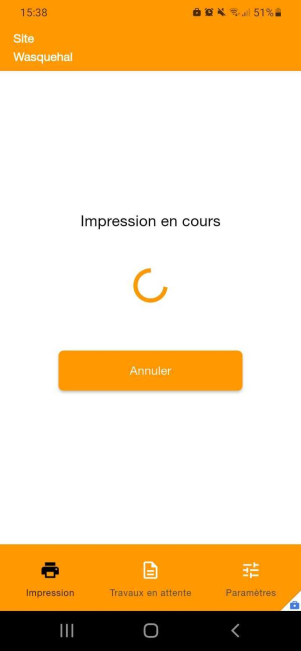
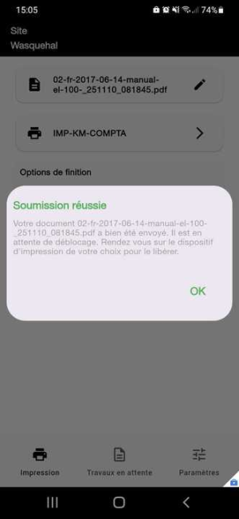
-
si Watchdoc est en mode "comptabilisation", le document est imprimé sans nécessiter de déblocage. Vous pouvez donc vous rendre sur l'imprimante sélectionnée pour y récupérer votre impression ;
-
si Watchdoc est en mode "validation", rendez-vous ensuite dans la liste des travaux en attente pour valider votre impression (cf. Débloquer l'impression).
Lancer l'impression depuis la fonction "partager le document .pdf"
Watchdoc Mobile Client vous permet de lancer l'impression depuis la fonction "Partager le document .pdf" de votre mobile.
-
Dans votre mobile, sélectionnez le fichier PDF que vous souhaitez imprimer ;
-
dans la liste des actions, cliquez sur le bouton Partager (Share) puis sélectionnez l'option PDF file :
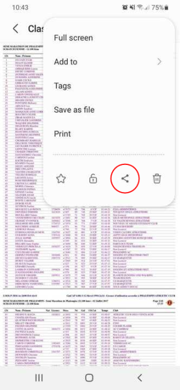
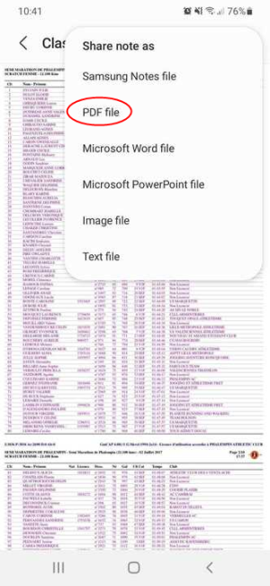
-
Dans la liste d'applications (professionnelles) permettant le partage, sélectionnez l'application Watchdoc Mobile Client :
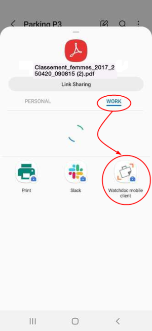
-
Dans l'interface Watchdoc, sélectionnez la destination d'impression ;
-
Au besoin, précisez les options de finition ;
-
Cliquez sur Imprimer :
è Un message confirme la réussite de la soumission :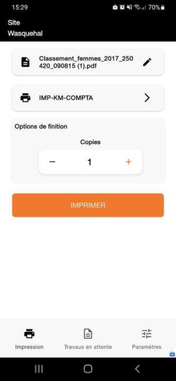
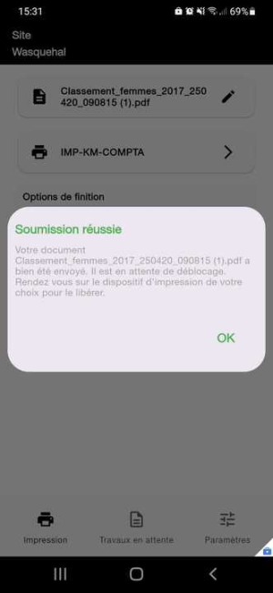
-
Rendez-vous ensuite dans la liste des travaux pour débloquer l'impression.
En cas d'échec, suivez les instructions affichées dans l'interface. Vous pouvez aussi télécharger les logs pour les envoyer au référent Watchdoc (cf. Télécharger les logs).
Débloquer l'impression
Si Watchdoc est installé en mode "validation", vos travaux d'impression restent bloqués sur le périphérique d'impression en attendant votre validation.
Dans ce cas, lorsque vous recevez le message "Soumission réussie", vous devez la débloquer physiquement.
-
Rendez-vous près du périphérique (imprimante ou MFP) sur lequel vous souhaitez débloquer vos impressions ;
-
Dans l'application, cliquez sur Travaux en attente :
-
si l'imprimante dispose d'un QR Code, cliquez sur Scanner le QR Code pour accéder à la liste des travaux en attente ;
-
si l'imprimante ne dispose pas de QR Code, cliquez sur le lien "Je ne trouve pas le QR Code de l'imprimante" :
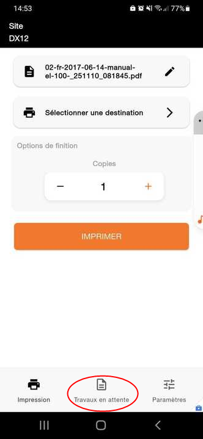
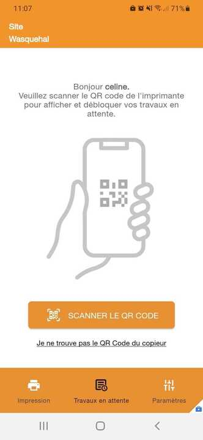
-
-
Dans la liste Destinations possibles, sélectionnez le périphérique d'impression sur lequel vous souhaitez imprimer ;
-
Les travaux d'impression sont listés dans la liste des documents en attente.
Dans cette liste, des icones indiquent :-
si le document est en couleur ou en noir et blanc ;
-
si le document est en recto ou en recto-verso ;
-
le délai depuis lequel l'impression a été demandée ;
-
le nombre d'exemplaires demandés ;
-
le nombre de pages du document.
-
-
cochez la case ou les cases des documents à imprimer ;
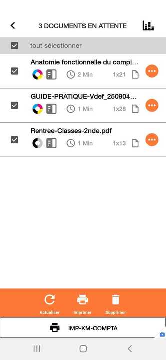
-
appuyez sur le bouton Imprimer situé dans le bandeau bas.
N.B. : vous pouvez aussi cliquer sur le bouton d'actions à droite de chaque document puis cliquer sur Imprimer.
-
sur le périphérique d'impression, récupérez vos impressions.
N.B. : les travaux sont conservés en attente de déblocage pendant une durée prédéfinie. Si vous ne trouvez pas vos travaux dans la liste, c'est que vous avez dépassé le délai de rétention autorisé. Relancez votre impression et débloquez-la dans le délai autorisé.
Message d'erreur
Dans le cas où l'application n'arrive pas à contacter le serveur (connexion WI-FI désactivée ou indisponibilité du serveur), un message d'erreur s'affiche :
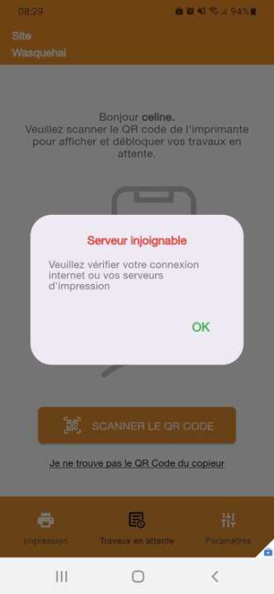
Supprimer un travail d'impression
Pour supprimer l'un des travaux de la liste des travaux d'impression :
-
dans la liste des travaux en attente, cliquez sur le bouton d'actions ;
-
dans la liste des actions, sélectionnez Supprimer ;
-
confirmez la demande de suppression ;
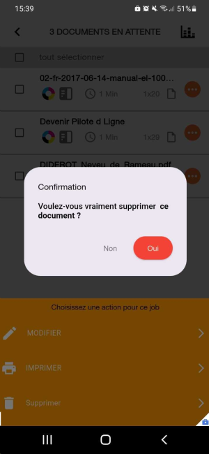
èun message confirme la suppression du travail d'impression.
Télécharger les logs
Si un problème survient dans l'application, vous pouvez télécharger les logs afin de les envoyer à votre référent Watchdoc, à condition de disposer d'une application de messagerie ou d'un espace de stockage dédié.
-
Quand le problème survient, cliquez sur l'icone Paramètres dans le bandeau bas de l'application :
-
cliquez sur le bouton Télécharger les logs ;
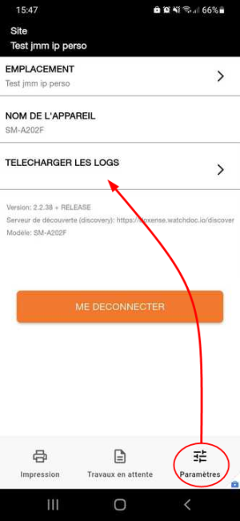
-
parmi les outils de messagerie proposés, sélectionnez celui avec lequel vous souhaitez envoyer les logs et complétez l'adresse de votre destinataire :
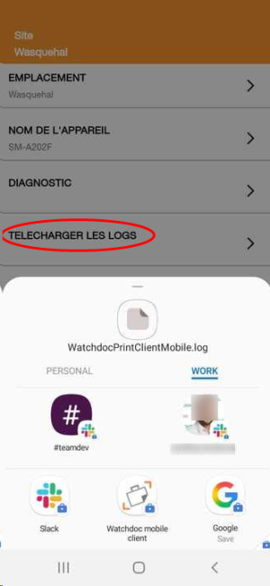
N.B. : vous pouvez aussi envoyer des fichiers de logs dans un espace de stockage partagé
-
confirmez l'envoi du fichier
è le message "L'importation a commencé" confirme l'envoi des logs au destinataire.
Se déconnecter
Pour vous déconnecter,
-
cliquez sur le bouton Paramètres dans le bandeau bas de l'application ;
-
puis cliquez sur le bouton Me déconnecter pour quitter l'application :
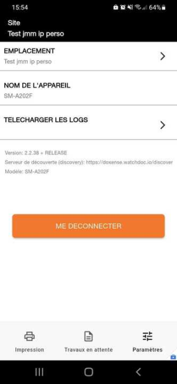
èVous revenez à l'interface d'identification.